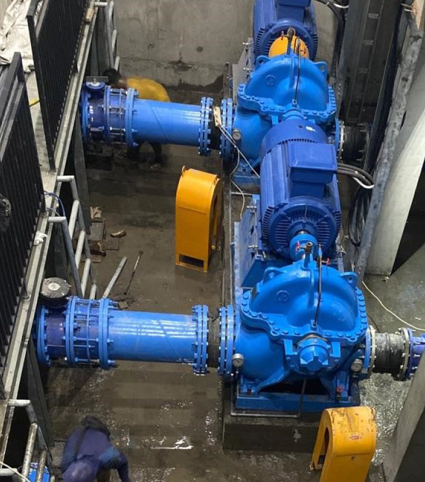
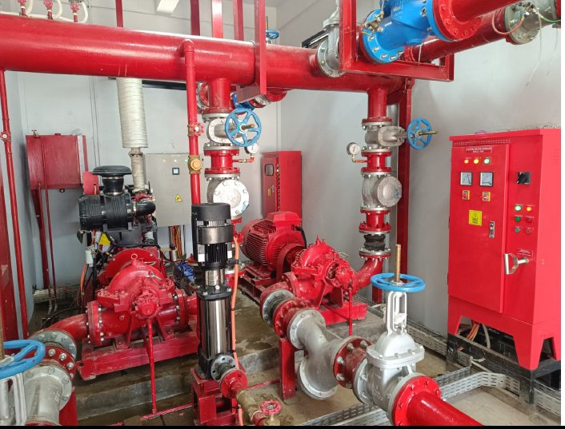
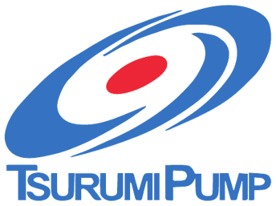
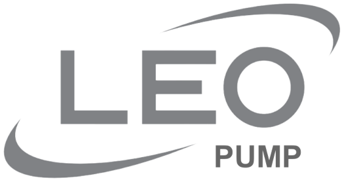
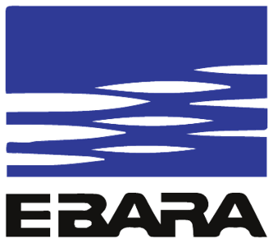
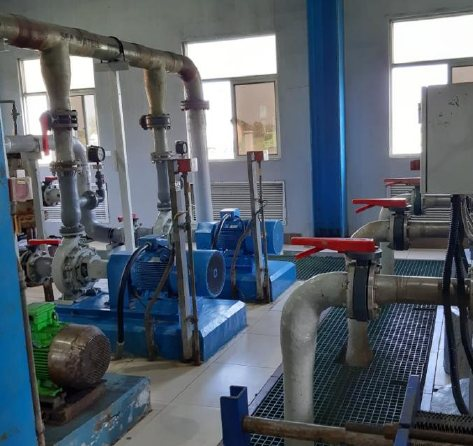
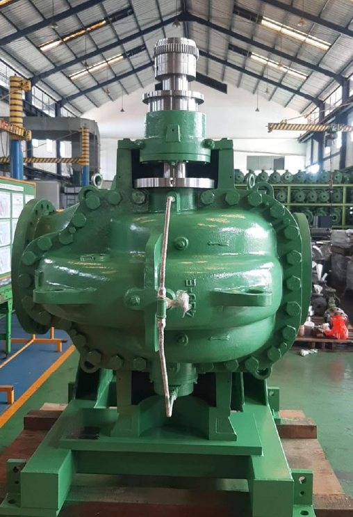
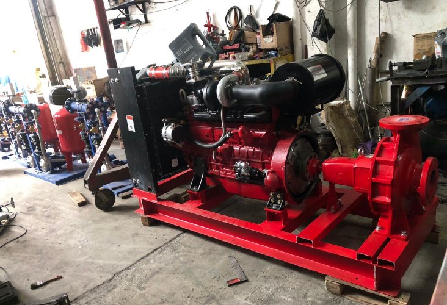
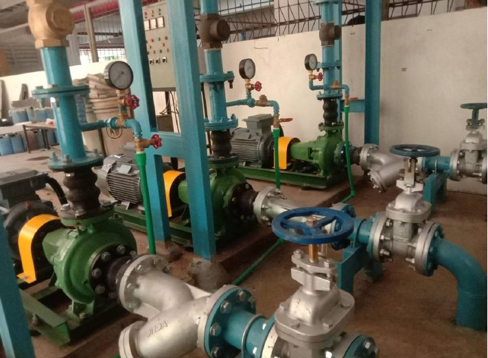

Booster Pump
Pompa penambah tekanan untuk sistem distribusi air.
PT Surya Tirta Cemerlang menyediakan technical product dan technical support bagi kontraktor industri, kontraktor bangunan, kontraktor WTP, dan kontraktor WWTP.


Berdiri sejak 1 Maret 2016, kami adalah perusahaan yang bergerak di bidang Industrial Pump & Technical Supply.
Kami memberikan technical product dan technical support pada setiap proyek yang kami kerjakan, bekerja sama dengan para kontraktor industri, kontraktor bangunan, kontraktor WTP, dan kontraktor WWTP. Kami senantiasa berusaha memberikan pelayanan terbaik kepada setiap pelanggan dan mitra bisnis kami.
Pompa industri dari brand terpercaya untuk berbagai aplikasi.
Dukungan teknis bagi kontraktor di setiap proyek.
Sebagai Authorized Dealer pompa Torishima, Tsurumi dan Leo Pump, kami menyediakan berbagai jenis pompa berikut:
Pompa penambah tekanan untuk sistem distribusi air.
Pompa untuk sistem pemadam kebakaran.
Pompa celup untuk air limbah dan drainase.
Pompa vertikal bertingkat untuk kebutuhan head tinggi.
Pompa split case horizontal untuk kapasitas besar.
Pompa celup aliran aksial untuk debit besar.
Pompa inline vertikal yang hemat ruang.
Pompa turbin vertikal untuk intake dan sumur.
Pompa sentrifugal dengan impeller semi terbuka.
Butuh pompa untuk proyek Anda? Konsultasikan kebutuhan aplikasi dan spesifikasinya dengan tim kami.
Minta PenawaranKami dipercaya sebagai dealer, agen dan distributor resmi untuk brand pompa berikut.
Agen produk PT Torishima Guna Indonesia untuk wilayah DKI Jakarta, Bogor, Tangerang dan Bekasi.
Surat Penunjukan Keagenan
Authorized Dealer PT Tsurumi Pompa Indonesia untuk produk “Tsurumi”, termasuk layanan after-service.
Certificate of Authorized Dealer
Distributor resmi pompa merek “LEO” berdasarkan kerja sama dengan PT Leo Pump Indonesia.
Distributor Agreement
Gedung, pabrik, PLN, PDAM, pertambangan hingga WTP — di berbagai kota di Indonesia dan Thailand.
Torishima Pump for Demin Water Pump
Torishima Vertical Split Case Pump
Torishima SS Duplex for Electrochlorination
Fire Pump Set Comply to NFPA-20
Plumbing Pump Torishima & Tsurumi Pump
Fire Pump Set Comply to NFPA-20
Plumbing Leo Pump
Plumbing Leo Pump
Distribution Pump – Torishima Vertical Split Case Pump




31 proyek
| No | Tahun | Proyek | Bidang | Lokasi | Aplikasi | Pompa |
|---|
Tidak ada proyek yang cocok dengan pencarian.
Diskusikan kebutuhan pompa dan technical support untuk proyek Anda bersama tim PT Surya Tirta Cemerlang.